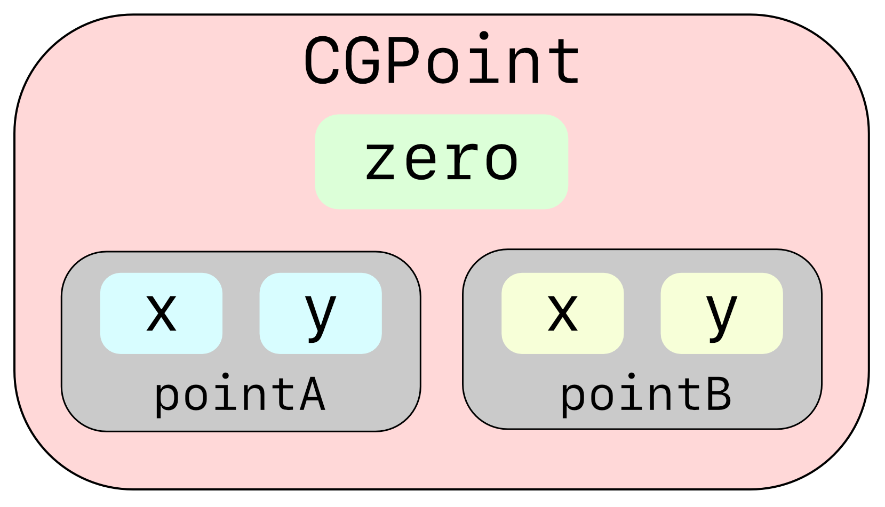

第14章：手势¶
手势是你和你的应用程序之间的主要界面。你已经使用了内置的手势进行点击和滑动，但SwiftUI还提供了各种手势类型供用户定制。
当用户刚接触苹果设备时，一旦他们花了几分钟时间使用iPhone，点击、用两根手指捏住放大或使元素变大，或用两根手指旋转元素就成为第二天性。你的应用程序应该使用这些标准手势。在本章中，你将探索如何用提供的手势识别器拖动、放大和旋转元素。

看一下单卡视图，你要拖动并调整照片和文本元素的大小。这是一个创建视图或视图修改器的机会，它可以接收任何视图内容，并允许用户在屏幕上拖动视图，或捏住视图进行缩放和旋转。在本章中，你将努力创建一个可调整大小、可重复使用的视图修改器。你将能够在你未来的任何应用程序中使用它。
创建可调整大小的视图¶
开始时，可调整大小的视图将简单地显示一个彩色的矩形，但在以后，你将改变它以显示任何视图内容。
➤ 打开启动项目，该项目与前一章的挑战项目相同，文件被分成若干组。
➤ 创建一个名为ResizableView.swift的新SwiftUI视图文件。
➤ 改变ResizableView以显示一个红色的圆角矩形，而不是"Hello, World!"的Text。
struct ResizableView: View {
// 1
private let content = RoundedRectangle(cornerRadius: 30.0)
private let color = Color.red
var body: some View {
// 2
content
.frame(width: 250, height: 180)
.foregroundColor(color)
}
}
翻阅代码：
- 创建一个
RoundedRectangle视图属性。你在这里选择了私有访问，因为现在没有其他视图能够引用这些属性。稍后，你将改变访问权限，允许任何你选择的视图传递进来。 - 在
body中使用content作为所需的View，并对其应用修改器。
➤ 预览该视图，你会看到你的红色矩形，有圆角。
创建变换¶
你将在本节中学习的技能：转换。
你的应用程序中的每张卡片都会容纳多个图片和文本片段，一般称为元素。对于每个元素，你需要存储一个尺寸、一个在屏幕上的位置和一个旋转角度。在数学中，您将这些空间属性统称为变换或转换。
➤ 在模型组中，创建一个名为Transform.swift的新Swift文件来保存转换数据。
➤ 替换文件中的代码并创建一个具有初始化空间属性的结构：
import SwiftUI
struct Transform {
var size = CGSize(width: 250, height: 180)
var rotation: Angle = .zero
var offset: CGSize = .zero
}
你为大小、旋转和偏移设置默认值。Angle是一个SwiftUI类型，可以方便地使用度和弧度。
注意这里使用的是.zero。Angle.zero和CGSize.zero都是返回零值的类型属性。在本章后面你会发现更多关于类型属性的内容。当类型对编译器来说是显而易见的，就像这里一样，你可以把Type从.zero中去掉，编译器会计算出使用哪种类型。
通常，变换也会持有一个比例值，但在这种情况下，你会更新元素的大小，而不是持有一个比例值。
➤ 打开ResizableView.swift并添加一个新的属性：
@State private var transform = Transform()
你把将应用于ResizableView的变换作为一个状态属性。稍后，你将把元素保存的变换传递进来，但现在，只需在本地持有变换。
➤ 改变frame(width:height:alignment:)以使用transform而不是硬编码的大小：
.frame(
width: transform.size.width,
height: transform.size.height)
因为transform保持相同的默认尺寸，所以视图不会改变。现在你已经准备好创建手势来移动你的视图了。

创建一个拖动手势¶
本节中你将学习的技能。拖动手势；重载操作符。
你将从拖动手势开始，用户在屏幕上移动一个手指。这也被称为平移手势。当用户接触到一个ResizableView并拖动她的手指时，视图将跟随她的手指。当她抬起手指时，视图将保持在那个位置上。
你将给视图一个修改器，它将更新ResizableView从其父视图中心的偏移。要定位视图，你可以选择使用position(_:)或offset(_:)视图修改器。你在transform中保存了一个offset的值，所以这里要用这个值。
➤ 在body的顶部，添加一个新的DragGesture实例：
let dragGesture = DragGesture()
.onChanged { value in
transform.offset = value.translation
}
该手势将在拖动时更新transform的offset属性。
onChanged(_:)有一个Value类型的参数，它包含了手势的当前触摸位置和从触摸开始的平移。
屏幕的中心位于offset.zero。
平移的量是偏移视图的量。平移是一个CGSize，所以当你穿越屏幕时，就是translation.width，而在屏幕上下移动就是translation.height。
➤ 在body的末尾为content添加新的修改器：
.offset(transform.offset)
.gesture(dragGesture)
修改器的顺序很重要 - gesture(_:)需要放在任何定位修改器之后。
➤ 实时预览视图并在屏幕上拖动它。
第一次拖动效果很好，但在第二次及以后的拖动中，视图在拖动开始时做了一个跳跃。这是因为拖动手势在拖动开始时将value.translation设置为零，所以你需要考虑到之前的任何平移。
➤ 给ResizableView添加一个新的状态属性，以便在开始拖动之前保持变换的偏移量：
@State private var previousOffset: CGSize = .zero
➤ 将dragGesture改为：
let dragGesture = DragGesture()
.onChanged { value in
transform.offset = CGSize(
width: value.translation.width + previousOffset.width,
height: value.translation.height + previousOffset.height)
}
.onEnded { _ in
previousOffset = transform.offset
}
在onChanged(_:)中，你用用户的拖动翻译量更新transform，并包括之前的任何拖动。
在onEnded(_:)中，你用新的偏移量替换旧的previousOffset，为下一次拖动做准备。你不需要使用提供的value，所以你使用_作为动作方法的参数。
➤ 在实时预览中再试一下。
这样做效果很好。现在你可以拖动你的视图，把它放在你想放的地方。
不过，CGSize代码有点啰嗦，必须对width和height进行计算。你可以通过重载+操作符来缩短这段代码。
操作符重载¶
操作符重载是指你重新定义诸如+, -, ` 和/` 等操作符的作用。
为了在offset上添加translation，你要在width上添加width，同时在height上添加height。所以你要用一个特殊的方法来重新定义+。
➤ 创建一个新的Swift文件，名为Operators.swift。任何时候，如果你想为一个特定的类型重载一个操作符，你可以在这个文件中添加这个方法。
➤ 用新方法替换代码：
import SwiftUI
func + (left: CGSize, right: CGSize) -> CGSize {
CGSize(
width: left.width + right.width,
height: left.height + right.height)
}
这里你指定了+操作符对CGSize类型的作用。参数是left和right，是+号左边和右边的项目。你返回新的CGSize。
这是一个简单的例子，说明你希望+号对CGSize起作用。在这里，将width和height加在一起是有意义的。然而，你可以重新定义这个运算符来做任何事情，你应该非常小心，确保这个方法是有意义的。不要做类似于重新定义乘号来做除法的事情!
➤ 现在，回到ResizableView.swift，将dragGesture改为：
let dragGesture = DragGesture()
.onChanged { value in
transform.offset = value.translation + previousOffset
}
.onEnded { _ in
previousOffset = transform.offset
}
你可以看到重载+运算符是如何减少代码并提高清晰度的。
创建一个旋转手势¶
你将在本节中学习的技能：旋转手势。
现在你可以在屏幕上移动你的视图了，是时候让它旋转了。你将在视图上使用两个手指，并设置一个RotationGesture来跟踪旋转的角度。
就像跟踪视图之前的偏移量那样，你将跟踪之前的旋转。
➤ 在ResizableView.swift中，为此设置了一个新的状态属性：
@State private var previousRotation: Angle = .zero
这将保持视图的旋转角度，进入手势的开始。
➤ 在body的顶部添加新的手势：
let rotationGesture = RotationGesture()
.onChanged { rotation in
transform.rotation += rotation - previousRotation
previousRotation = rotation
}
.onEnded { _ in
previousRotation = .zero
}
onChanged(_:)提供手势的旋转角度作为你提供的动作的参数。你将当前的旋转减去之前的旋转，加入到transform的旋转中。
onEnded(_:)发生在用户将手指从屏幕上移开之后。在这里，你把之前的任何旋转设置为零。
➤ 将.gesture(dragGesture)替换为：
.rotationEffect(transform.rotation)
.gesture(dragGesture)
.gesture(rotationGesture)
为了在实时预览中测试你的旋转效果，因为你没有可用的触摸屏，你可以通过按住Option键模拟两个手指。两个点会出现，代表两个手指。(你可能需要在它们出现之前点击预览)。
移动你的鼠标或触控板来改变这两个点之间的距离。确保它们都在矩形View上，然后点击并拖动。你的视图应该旋转。如果你的点之间的距离是正确的，但你希望点在屏幕上的其他地方，你可以按住Shift键和Option来移动这些点。仍然按住Option，当它们在正确的位置时，放开Shift键。
修改器的顺序在这里也很重要。旋转的支点是围绕视图的中心，不考虑任何偏移。
➤ 拖动视图，然后旋转它，你会看到视图的支点是在屏幕的中心。这就是没有应用偏移的视图中心点。
有时这可能是你想要的。但在你的例子中，你想在偏移之前旋转视图。
Swift
rotationEffect(_:anchor:)默认是围绕视图中心旋转的，但你可以通过改变anchor将其改为视图中的另一点。
➤ 将.offset(transform.offset)移到rotationEffect(transform.rotation)之后，但在gesture(dragGesture)之前。
Note
快捷键Option-Command-[和Option-Command-]可以向上和向下移动代码行。
手势的顺序也很重要。如果将拖动手势放在旋转手势之后，那么旋转手势就会吞噬掉触控。
➤ 尝试在实时预览中旋转视图

➤ 手势在真实的设备上总是感觉更好，所以要在设备上运行这个，请打开CardsApp.swift。
➤ 暂时将CardsView()改成：
ResizableView()
➤ 将运行目的地改为您的设备。
Note
如果您还没有在设备上运行应用程序，请查看第1章"检查您的工具"中的运行项目。你需要在首选项中设置一个苹果开发者帐户，以便在设备上运行该应用程序。
➤ 在卡片应用程序的签名和能力选项卡上设置你的团队标识符。
➤ 构建和运行并尝试你的手势，看看它们感觉有多流畅。在设备上的两个手指感觉比试图操纵模拟器的手势点要自然得多。
创建一个缩放手势¶
本节中你将学习的技能：放大手势；同时手势
最后，你要将视图向上和向下缩放。MagnificationGesture作为一个捏合手势操作，所以你将能够使用两个手指同时进行旋转和缩放。
你的缩放方式与旋转和偏移略有不同。除非用户当前正在缩放，否则视图将始终处于1的比例。在缩放结束时，你将计算出视图的新尺寸，并将缩放比例设为1。
➤ 打开ResizableView.swift，并创建一个状态属性来保持当前的比例：
@State private var scale: CGFloat = 1.0
➤ 在body的顶部，创建刻度手势：
let scaleGesture = MagnificationGesture()
.onChanged { scale in
self.scale = scale
}
.onEnded { scale in
transform.size.width = scale
transform.size.height = scale
self.scale = 1.0
}
onChanged(_:)获取当前手势的比例，并将其存储在状态属性scale中。为了区分这两个同名的属性，用self来描述ResizableView的属性。
当用户完成了捏的动作并将手指从屏幕上抬起时，onEnded(_:)会获取手势的尺度并改变transform的宽度和高度。然后，你将状态属性重置为1.0，为下一次缩放做准备。
➤ 在.rotationEffect(transform.rotation)之后，添加比例修改器：
.scaleEffect(scale)
创建一个同时进行的手势¶
拖动是用一个手指的特定手势，而你可以用两个手指同时做旋转和缩放。要做到这一点，请将.gesture(rotrotationGesture)改为：
.gesture(SimultaneousGesture(rotationGesture, scaleGesture))
现在您可以同时执行这两个手势。
➤ 在实时预览中尝试你的三种手势。然后，构建并运行您的应用程序，并在模拟器中或（如果可能的话）在设备上尝试它们。
创建自定义视图修改器¶
本节将学习的技能：创建ViewModifier；View扩展；使用视图修改器；视图修改器的优点
你已经做了一个非常有用的视图，它可以在许多应用环境中使用。与其硬编码要调整大小的视图，不如改变这个视图，使其成为一个修改器，作用于其他视图。
➤ 在ResizableView.swift中，将 struct ResizableView: View {改为：
struct ResizableView: ViewModifier {
在这里，你声明了新的视图修改器。目前，请忽略所有的编译错误，直到你完成了修改器。
➤ 将var body: some View {改为：
func body(content: Content) -> some View {
因为ViewModifier接收了一个现有的视图，而不是一个var，它需要一个以视图内容为参数的方法。内容将是一个视图，如Rectangle或Image或任何你创建的自定义视图。
ResizableView应该只对视图的预期属性进行操作。对于调整大小，你会期待一个Transform属性，但是color与调整大小无关。你将在修改器之外设置颜色和内容。
➤ 删除：
private let content = RoundedRectangle(cornerRadius: 30.0)
private let color = Color.red
➤ 同时从content中删除.foregroundColor(color)。
你的content加上修饰语应该是：
// ... define gesture variables here
content
.frame(
width: transform.size.width,
height: transform.size.height)
.rotationEffect(transform.rotation)
.scaleEffect(scale)
.offset(transform.offset)
.gesture(dragGesture)
.gesture(SimultaneousGesture(rotationGesture, scaleGesture))
➤ 要预览修改器，请在ResizableView.swift的末尾更改预览提供者：
struct ResizableView_Previews: PreviewProvider {
static var previews: some View {
RoundedRectangle(cornerRadius: 30.0)
.foregroundColor(Color.red)
.modifier(ResizableView())
}
}
在这里，你设置了视图应该使用的内容，并添加了modifier(_:)与你的自定义视图修改器。
保持你的预览工作始终是一个好主意。通过视图修改器的预览，你可以为你的代码的未来用户提供一个如何使用修改器的例子。永远记住，"未来的用户"包括几周后的你! :]
➤ 在CardsApp.swift中，将 ResizableView() 恢复为：
CardsView()
你的项目现在应该编译了。
➤ 在ResizableView.swift中，恢复实时预览并检查新的修改器。
它的工作原理与ResizableView完全相同，但你现在可以将修改器应用于任何视图并使其可调整大小。
使用你的自定义视图修改器¶
在预览中，你使用了.modifier(ResizableView())。你可以通过向View添加一个pass-through方法来改进。
➤ 创建一个新组，并将其命名为Extensions。
➤ 在Extensions中，创建一个新的Swift文件，将其命名为ViewExtensions.swift。
➤ 将该文件中的代码替换为：
import SwiftUI
extension View {
func resizableView() -> some View {
return modifier(ResizableView())
}
}
你正在用一个默认的方法扩展View协议。resizableView()现在可以在任何符合View的对象上使用。该方法只是返回你的修改器，但它确实使你的代码更容易阅读。
➤ 打开CardDetailView.swift并添加一个新的视图属性：
var content: some View {
ZStack {
Capsule()
.foregroundColor(.yellow)
.resizableView()
Text("Resize Me!")
.font(.largeTitle)
.fontWeight(.bold)
.resizableView()
Circle()
.resizableView()
.offset(CGSize(width: 50, height: 200))
}
}
➤ 在body中，将Color.yellow替换为：
content
最终content将显示卡片元素，但现在你可以测试你的新的可调整大小的视图。这里你用两种不同类型的视图测试你的修改器--两个Shape和一个Text。Circle的偏移量被应用在resizableView()的偏移量之上。所有的东西都放在一个ZStack里面，它是一个容器视图，允许它的孩子使用绝对定位。
➤ 实时预览以检查新的调整大小的能力。

Text有一个问题。Capsule记住了它的大小，因为ResizableView里面有frame(width:height:alignment:)修改器。然而，Text有一个font(_:)修改器。因为修改器是直接应用于视图的，所以它比frame(width:height:alignment:)具有优先权。
有一个按需缩放文本的技巧。给字体一个很大的尺寸，比如·。然后对它应用一个最小的比例因子，以缩小它的大小。
➤ 删除.font(.largeTitle)。
➤ 在.fontWeight(.bold)之后，添加：
.font(.system(size: 500))
.minimumScaleFactor(0.01)
.lineLimit(1)
.lineLimit(1)可确保文本保持在一行上，不会绕行。
➤ 在实时预览中再次尝试调整文本的大小。这一次，文本将保持其大小。
视图修改器的优势¶
视图修改器比自定义视图的一个优势是，你可以将一个修改器应用于多个视图。如果你想让文本和胶囊成为一个组，那么你可以同时调整它们的大小。
➤ 在ZStack内将Capsule和Text分组，并将resizableView()应用于Group而不是两个视图。
Group {
Capsule()
.foregroundColor(.yellow)
Text("Resize Me!")
.fontWeight(.bold)
.font(.system(size: 500))
.minimumScaleFactor(0.01)
.lineLimit(1)
}
.resizableView()
在这里，你把两个视图分组，使它们合并成一个视图。
➤ 实时预览该视图。
当你现在调整大小时，你同时拖动和调整胶囊和文本的大小。当你在图片上有一个标题或水印时，这可能很有用，你希望它们都在同一比例。
其他手势¶
- 轻敲手势
在上一章中，你在敲击卡片时使用了onTapGesture(count:perform:)。还有一个TapGesture结构，你可以使用onEnded(_:)，与本章其他手势的使用方法相同。
- 长按手势
同样地，你可以使用结构LongPressGesture来识别视图上的长按，如果你不需要设置单独的手势属性，也可以使用onLongPressGesture(minimumDuration:maximumDistance:pressure:perform:)。
类型属性¶
本节中你将学习的技能：类型属性；类型方法
到目前为止，你已经硬编码了卡片缩略图的大小，还有Transform中的默认大小。在大多数应用程序中，你会想要一些尺寸或颜色主题的全局设置。
你可以选择在全局空间中保留常数。例如，你可以创建一个新的文件，在顶层添加这些代码。
var currentTheme = Color.red
currentTheme就可以被你的整个应用程序访问。然而，随着你的应用程序的增长，有时很难立即确定某个特定的常量是全局的，还是属于你当前的类或结构。识别全局常量并确保它们只存在于一个地方的一个简单方法是为它们设置一个特殊的类型，并为该类型添加类型属性。
Swift Dive:存储的属性与类型属性¶
要创建一个类型属性，而不是一个存储属性，你要使用static关键字。
你已经使用了类型属性CGSize.zero。CGPoint也有一个zero的类型属性，并定义了一个2D点，其值为x和y。检查CGPoint结构定义的一部分，看看存储和类型属性。
public struct CGPoint {
public var x: CGFloat
public var y: CGFloat
}
extension CGPoint {
public static var zero: CGPoint {
CGPoint(x: 0, y: 0)
}
}
这是一个使用CGPoint的例子：
var point = CGPoint(x: 10, y: 10)
point.x = 20
当你创建一个CGPoint结构的实例时，你要为该结构设置x和y属性。这些x和y属性对您实例化的每个CGPoint都是唯一的。
CGPoint也有一个类型属性：zero，它描述了一个位于(0, 0)的点。要使用这个类型属性，你要使用类型的名称：
let pointZero = CGPoint.zero // pointZero contains (x: 0, y: 0)
这就建立了一个名为pointZero的CGPoint实例，其x和y值为零。
当你实例化一个新的结构时，该结构将其属性与其他结构分开存储在内存中。然而，一个static或type的属性在该类型的所有实例中是不变的。无论你将结构实例化多少次，static类型属性只有一个副本。
在下图中，有两个CGPoint的副本，pointA和pointB。每一份都有自己的内存存储区域。CGPoint有一个类型属性zero，被存储一次。

Swift
CGPoint.zero被定义为一个计算属性。它的返回值是CGPoint(x: 0, y: 0)，你不能把它设置为任何其他值。将.zero定义为计算属性或static let zero = CGPoint(x: 0, y: 0)并没有什么实际区别。这只是一种风格上的选择。
为卡片创建全局默认值¶
你将在本节中学习的技能。类型方法
回到你的硬编码的尺寸值，你现在要创建一个文件来保存你所有的全局常数。
➤ 创建一个名为配置的新组。
➤ 在配置中，创建一个名为Settings.swift的新Swift文件，并将代码替换为：
import SwiftUI
struct Settings {
static let thumbnailSize =
CGSize(width: 150, height: 250)
static let defaultElementSize =
CGSize(width: 250, height: 180)
static let borderColor: Color = .blue
static let borderWidth: CGFloat = 5
}
在这里，你为卡片缩略图的大小、卡片元素的大小和你以后要用的边框创建了默认值。
请注意，你创建了一个结构。虽然这很有效，但它可能会成为问题，因为你可以实例化这个结构，并在整个应用程序中拥有Settings的副本。
let settings1 = Settings()
let settings2 = Settings()
然而，如果使用枚举，就不能将其实例化，所以它可以确保你永远只有一个Settings的副本。
➤ 将struct Settings {改为：
enum Settings {
以这种方式使用枚举和类型属性可以保护你的应用程序的未来。以后，其他人可能想给你的应用程序添加另一个设置。他们不需要改变枚举本身，但他们将能够创建一个扩展。
例如，他们可以像这样添加一个新的类型属性：
extension Settings {
static let aNewSetting: Int = 0
}
扩展可以保存类型属性，但不能保存存储属性。
➤ 打开CardThumbnailView.swift。不要在这里定义框架的大小，而是可以依靠你的设置默认值。
➤ 将.frame(width: 150, height: 250)改为：
.frame(
width: Settings.thumbnailSize.width,
height: Settings.thumbnailSize.height)
➤ 同样，打开Transform.swift，将var size = CGSize(width: 250, height: 180)改为：
var size = CGSize(
width: Settings.defaultElementSize.width,
height: Settings.defaultElementSize.height)
如果你以后想改变这些尺寸，你可以在Settings中进行。
创建类型方法¶
除了static属性，你也可以创建static方法。为了说明这一点，你将扩展SwiftUI内置的Color类型。你可能会对灰色的卡片缩略图列表感到相当厌倦，所以你将创建一个方法，在每次刷新视图时给你随机的颜色。
➤ 在扩展组中，创建一个名为ColorExtensions.swift的新Swift文件。
➤ 将代码替换为：
import SwiftUI
extension Color {
static let colors: [Color] = [
.green, .red, .blue, .gray, .yellow, .pink, .orange, .purple
]
}
你创建了一个Color数组，通过引用Color.colors在整个应用程序中可用。
➤ 在 Color中创建一个新方法：
static func random() -> Color {
colors.randomElement() ?? .black
}
该方法从颜色数组中返回一个随机元素，如果颜色数组为空，则返回黑色。
Swift
精明的读者会注意到，这个方法可以很容易地成为一个static var的计算属性。然而，按照惯例，如果你要返回一个可能经常变化的值，或者有复杂的代码，就使用一个方法。
➤ 打开CardThumbnailView.swift。
➤ 将.foregroundColor(.gray)改为：
.foregroundColor(.random())
这里你使用的是你在Color上创建的static方法。每次列出缩略图时，它们都会使用不同的颜色。
➤ 预览CardsView.swift，看到你的随机卡片颜色。每次你按下实时预览，颜色就会改变。
挑战¶
挑战：制作一个新的视图修改器¶
视图修改器不仅对重复使用视图很有用，而且也是整理的好方法。你可以把修改器组合成一个自定义修改器。或者，就像CardDetailView中的工具栏修改器一样，如果一个修改器有很多的代码，为自己节省一些代码阅读的疲劳，把它分开到自己的文件中。
你的挑战是创建一个新的视图修改器，将工具栏的代码移到一个叫做CardToolbar的修改器中。
要做到这一点，你要：
- 创建一个新的文件来保存视图修改器。
- 创建一个结构
CardToolbar: ViewModifier，并创建一个新的方法body，只返回content，就像你把ResizableView变成ViewModifier那样。 - 删除预览，因为这个修改器没有意义。
- 对于
body，从CardDetailView中剪切工具栏修改器代码，并将修改器粘贴到CardToolbar的content上。 - 在
CardToolbar中，你需要有ViewState环境对象，和currentModal作为一个绑定。 - 在
CardDetailView中，在content中添加你新的自定义修改器。.modifier(CardToolbar(currentModal: $currentModal))。
当你完成挑战后，你的代码应该是一样的，但是，经过这次重构，CardDetailView更容易阅读。
一如既往，你可以在本章的挑战文件夹中找到解决方案。
关键点¶
- 自定义手势可以让你以任何你选择的方式与你的应用程序互动。请确保手势有意义。捏合缩放是整个苹果生态系统的标准，所以，即使你可以，也不要以非标准的方式使用
MagnificationGesture。 - 你将视图修改器应用于视图，导致视图的不同版本。如果修改器需要改变状态，创建一个符合
ViewModifier的结构。如果修改器不需要改变状态，你可以简单地在View扩展中添加一个方法，用它来修改视图。 静态或类型属性和方法存在于类型上。存储的属性存在于每个类型的实例中。Self，首字母大写，是指类型内部的方式。self指的是该类型的实例。苹果公司广泛地使用类型的属性和方法。例如，Color.yellow是一个类型属性。
从这里开始，该往哪里走？¶
现在你应该能够理解很多技术术语了。现在是时候看看苹果的文档和文章了。在https://apple.co/3isFhBO，你会发现一篇名为《用手势增加互动性》的文章。这篇文章描述了在手势中更新状态。阅读这篇文章，检查你对该主题到目前为止的理解。
苹果公司的文章Composing SwiftUI Gestures, 在https://apple.co/36meaVo 描述了以各种方式组合手势。
创建你自己的修改器。任何时候，当你重复你的视图的设计时，你应该考虑创建一个方法或修改器来封装这些代码。
把你的应用程序的一部分放在模块中考虑。在本章中，你创建了一个有用的可调整大小的视图修改器，现在你可以在你创建的任何应用程序中使用。在创建视图时，考虑如何将其抽象化，使其更加通用。
在下一章中，你将开始计划如何构造应用程序的数据，并研究如何通过视图层次结构传递数据和动作。